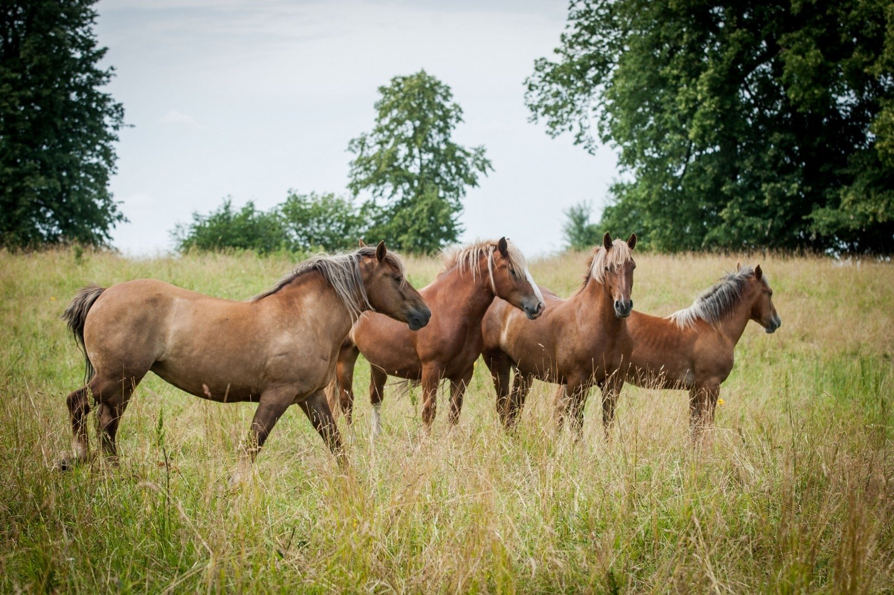

arkliai žaidimai - žaisti nemokamai žaidimas žaidimas
- Arkliai - xszaislai.lt
arkliai gera kaina internetu. Didelis prekių pasirinkimas, saugus pirkimas, prekių pristatymas į namus ar biurą. Įsigykite prekes internetu pigiau. - 10 įdomių faktų apie arklius, kurių galbūt nežinojote: kuo ...
1970-aisiais buvo pastebėta, kad grynakraujai fryzų arkliai, besivaržantys kinkinių varžybose, prarado dalį savo ištvermės, tad Nyderlandų veisėjas Jurgen Hillner juos ėmė kryžminti su arabų žirgais, pasižyminčiais puikiomis darbinėmis savybėmis. - arkliai - LRT
Asociacija vienija Lietuvos sunkiųjų ir stambiųjų žemaitukų arklių augintojus. įkurta 1997-08-04, asociacijos prezidentas, Vigantas Indrašius, asociacijos administratorius Agnė Indrašienė - Apie arklius - Arkliai
Arkliai būna labai įvairių dydžių – nuo mažiausio pasaulio arklio Falabela, kurio aukštis ties gogu tesiekia 76 cm, iki didžiausio iš visų veislių šairo. Šairo eržilas turi būti ... - Arkliai, žirgai skelbimai | Plius.lt
Arkliai, žirgai (181) + Įdėti skelbimą Įsiminti skelbimai (0) Skelbimų: 181 . Atnaujinti viršuje. Naujausi viršuje Atnaujinti viršuje Pigiausi viršuje Brangiausi viršuje. Skuodo r. rugsėjo 1 d. 2. Perkame arklius . Įmonė nuolat superka įvairaus įmitimo arklius, moka PVM. ... - Pradinis puslapis - Arkliai.com
Pries mūsų akis dainuojantys arkliai! Tiesa, šios dainis ritmą gali parinkti tu pati. Pirmasis arkliukas dainuoja "bum čiči bum" ir yra labai mielas. Antrasis arklys turi storą balsą ir dainuoja "baaammmm bammmmmmm" kas suteikia jam žavumo. Trečiasis tai jau turbūt ne arklys, o kumelė, nes turi ploną balselį ir dainuoja "uuuu uuuu ... - Arkliai, žirgai flora, fauna - Skelbiu.lt
Antrą gyvenimo šansą gavę arkliai mėgaujasi gyvenimu: čia išnaudoja ne juos, o jie. 55. 246. Labas rytas, Lietuva 2020.06.25 07:37. Labas rytas, Lietuva I d. Arklių slėnyje – antras šansas nebereikalingiems gyvūnams: čia jie gali elgtis kaip nori. 246. 20:59. 147. - Įdomybės apie arklį - Arklio muziejus
Ar žinote kokia arklio galia (AG) yra lygi kiek kilovatų (ag kw ar kw ag)? Kilovatai į arklio galios skaičiuoklė - atsakymai čia.. - Arabo-Fryzas - Arkliai.com
Kai arkliai stovi ant labai šlapių grindų arba ganosi drėgnose ganyklose, gali prasidėti kanopos varlės puvimas. Jos grioveliuose susirenka šlapia, dvokianti gelsvai balta masė. Jei laiku nepašalinamos priežastys ir negydoma, gali išsivystyti kanopos vėžys. Varlę reikia gerai nuvalyti, pašalinti nešvarumus, į griovelius ... - arkliai žaidimai - žaisti nemokamai žaidimas žaidimas
Arkliai.com. 1 month ago . Karys su savo žirgu - kliūtinio jojimo pionieriai - šoka per griovį. ... See More See Less. Photo. View on Facebook

×
Arkliai žaidimai mergaitėms
Būtų puiku turėti savo arklides, kur gyvena šilto prekystalių grakštus Arkliai ir mažų ponių. Tai yra vienintelis malonumas gyvenime nėra daug, bet žaisti nemokamus internetinius žaidimus Arkliai gali bent kartą per dieną. Jūs esate galima įsigyti parduotuvėse dalykų jų žirgai dalyvauti su jais rasių, kasytės savo manes ir net kreipėsi į Mielas Paveikslėliai kūno. Jūs galite žaisti Quest, rinkti artefaktus ir daro kitas užduotis ar klausytis gražių dueto rėksmingas arklius. Rūpinimasis jų taip pat yra šio proceso dalis, todėl maitinti augintiniai ir valyti arklides.
4.5 1 2 3 4 5 (Total 10)Geriausiai Arkliai žaidimai mergaitėms
Jodinėjimas 3d lenktyninių Ponis Paradise Metalo Vienaragis Naujas mažai ponis puošniai apsirengti Ponis Nuotykių Pinata medžiotojas Mano сute ponis dienos priežiūros Mano Littel ponis: Raibow Dash`s spalvingi arbatėlė Jodinėjimas Šuoliai 2 Testas: savo ponis Saulėlydis: Nėščios ponis Jodinėjimas Šuoliai iššūkis Mano New Town Mano arklys ūkis Lenktynės Ponis išvalyti Grožio Jojimo stovykla Dora Horse Racing Mania My Little Pony: Atitikimas Mano brangus ponis Sofija Puikus priežiūra minimus Mielos Jodinėjimas ligoninė Jodinėjimas jumping Jodinėjimas Dress-up Barbė ir arklių Surasti skirtumus: arkliai! Fantazija Jodinėjimas Gamintojas Kalbėjimas Jodinėjimas Ben 10: Jodinėjimas Šokinėja ant arklio 2 Man ir mano arklys Mano saldus arklys Dress arklį Mano ponis parkas Rūpinimasis arkliams Kaip Lygiosios Jodinėjimas Žirgai sportui Jodinėjimas Šuoliai Champs Ponis Day Care The Noble Horse Bratz mažai arkliai Pabėgti iš kiosko Dainavimas Arkliai Amazing Space poniai Sofija ir draugai slaptų žvaigždės Jojimas Pabėgti nuo stabilios Mano ponis: My Little varžybos Ponis gudrumu Clop Rūpintis saldus ponis Jodinėjimas Rancher Ponis SPA dieną Ponis Uzpost Šuoliuojantis arklys Uzpost Ponis lenktynės Jodinėjimas Plaukų studija White Horse princesė Dora ponis važiavimo Jodinėjimas dailininkas Arkliai -2 Šerifas Callie Didysis banditas gaudynės Išvalyti Jodinėjimas Ūkio 2 Horsey ūkis Arkliai: rasti skirtumai Žirgynas Jodinėjimas rūpestinga Šuoliai ant arklio Dream arklys Banditas Winx klubas: Magiškas nuotykių Kliūtinis jojimas 1 2 3 4 >Žaidimai Arkliai Kategorija:
Apie arklių žaidimai Ponis Suknelė Gyvūnų globos Puzzle Online žaidimai Jigsaw puzzles Mokymo Naminiai gyvūnai Protingas Lenktynių Merginos Modeliavimas mergaitėms Gyvūnai Įgūdis Šukuosena 7 metai Ūkis Race berniukų Šokinėjimas Įsiutimas Lenktynės Princesė Mada Nuotykiai Rask daiktus ŪkininkasNaujausios Arkliai žaidimai mergaitėms
Muzika Galopp „Horse Run 3D“ Derbio lenktynės Eržilų dvasios gladiatorių įniršis Žirgų galvosūkis Žirgai Vienaragio šeimos simuliatoriaus magijos pasaulis Jojikas Žirgų lenktynių derbio ieškojimas Šuolių su žirgais čempionai Stabdyk arklius! Šokinėjantis arklys 3d Žirgo šeimos gyvūnų simuliatorius 3d Dvasia Wild Und Frei: Musik Galopp Jodinėjimo knygelė Mielas mažasis arklys